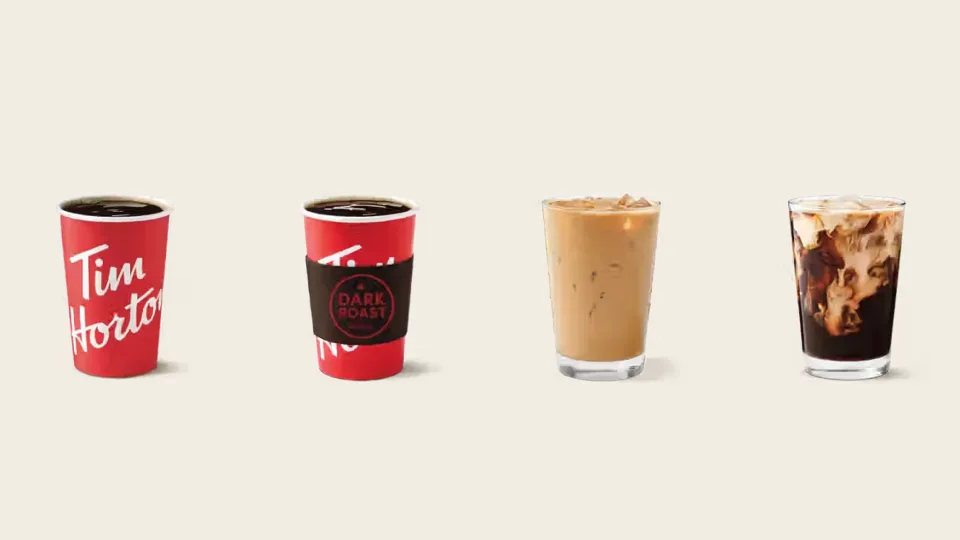

Unofficial fan guide - not affiliated with Tim Hortons
Where to buy Tim Hortons whole beans, ground coffee and K-Cups in Canada and the U.S., what each bag costs, and how much you save brewing at home.
Full Menu / Blog / Tim Hortons Coffee Beans

Tim Hortons sells its Original Blend whole beans in grocery stores, not on its own online shop. It is a medium roast made from 100% Arabica beans. In Canada the bags are 300 g and 907 g. In the U.S. they are 12 oz and 32 oz. Tim Shop sells ground coffee and K-Cups only.
Tim Hortons uses 100% Arabica beans for its Original Blend, the medium roast poured as brewed coffee in every restaurant and sold in bags. Tim Hortons says the recipe has been in use since 1964 and that only three people know it.
The beans come mostly from Central and South America. A 2023 Narcity tour of the roastery named Guatemala, Brazil and Colombia, and said the blend combines five types of bean. Tim Hortons says it works with the verification firm Enveritas, which assesses all of its coffee bean purchases every year. The retail bags simply say the beans come from several growing regions. For what the blend tastes like in the cup, and how it compares with the Dark Roast and Decaf, see our coffee menu guide.
Tim Hortons roasts its coffee at its own roasteries. The best known is in Ancaster, Ontario, a 74,000-square-foot plant about an hour from Toronto that has supplied Canadian restaurants since 2009. Tim Hortons also has a roastery in Rochester, New York.
At Ancaster, green coffee is tasted three times before it reaches the plant, and about 10% of shipments are rejected for quality. The plant handles around 1.5 million pounds of coffee a week. Bags sold in grocery stores say the coffee is blended and roasted in Canada, but they don't name the plant.
Tim Hortons whole beans come in two bag sizes in each country: 300 g and 907 g in Canada, and 12 oz (340 g) and 32 oz (907 g, or 2 lb) in the U.S. Every whole-bean bag is the Original Blend. You won't find whole-bean Dark Roast, Decaf or flavoured coffee.
The rest of the range is pre-ground or in pods. Here is what Tim Hortons sells for home brewing in Canada, with prices from its official Tim Shop on October 6, 2026.
| Format | Blends | Sizes | Tim Shop price (CAD) |
|---|---|---|---|
| Whole bean | Original Blend | 300 g, 907 g | Not sold (grocery only) |
| Fine grind | Original, Dark Roast, Colombian, Decaf, Hazelnut | 300 g | $11.99 |
| Fine grind, large | Original Blend 875 g, Dark Roast 825 g, Decaf 640 g | 640-875 g | $24.99-$27.99 |
| K-Cup pods | Original, Dark Roast, Decaf | 30 or 48 pods | $25.99 / $35.99 |
| Flavoured K-Cups | French Vanilla, Variety Pack | 30 pods | $27.99 |
| Brew Over Ice K-Cups | Original, French Vanilla | 10 pods | $9.99 |
| Instant | Premium (300 g), Dark Roast, Decaf, Iced Coffee (100 g) | 100-300 g | $7.99-$19.99 |
| Espresso capsules | Bold, Bright, Classic Lungo, Decaf, Caramel | 10 capsules | $7.99 |
The whole-bean bag is the one to buy if you own a grinder. It holds the same Original Blend as the ground coffee, but you grind it yourself just before brewing, so the coffee keeps more aroma. The 907 g bag makes roughly 57 mugs at the brew ratio we use below.
Ground coffee is labelled "fine grind" because it is made for automatic drip machines. That suits most coffee makers in Canadian kitchens, but it is too fine for a French press. K-Cup pods fit Keurig brewers and come in the same three core blends as the restaurant: Original, Dark Roast and Decaf.
Instant coffee and espresso capsules round out the range for people without a drip machine. The capsules come in packs of 10 and are sold in five varieties. The Brew Over Ice pods are made to brew a stronger cup over ice. They are the closest thing to a Tims Original Iced Coffee you can make at home.
The best places to buy Tim Hortons coffee beans are major grocery stores and Amazon, in both Canada and the U.S. That is also where to buy the large bags at the lowest unit price. The official Tim Shop sells ground coffee and pods but not whole beans. Searching it for "whole bean" on October 6, 2026 returned only ground coffee.
In Canada, whole-bean bags are sold at grocery chains such as Metro and on Amazon.ca, where both the 300 g and 907 g bags are listed. Loblaw stores such as Real Canadian Superstore carry the 300 g Original Coffee, which is ground, so check the bag before you buy. For ground coffee and K-Cups, Tim Shop ships across Canada, with free shipping on orders over $50. Some restaurants also keep packaged coffee near the counter.
In the U.S., the 12 oz and 32 oz whole-bean bags are sold at Walmart, Target, Kroger and its banners, Meijer, Sam's Club, Wegmans and Amazon. You can also order them for delivery through Instacart. Availability is best in states with many restaurants, such as New York, Michigan and Ohio. Our guide to Tim Hortons in the U.S. shows where the chain is strongest.
A 907 g bag of Tim Hortons whole beans costs about $30 CAD in Canada, and a 32 oz bag costs about $21 USD in the U.S. The small bags cost more per gram, so the large bag is the better buy if you drink coffee every day.
In early October 2026, Metro listed the 300 g whole-bean bag at $14.99 and the 907 g bag at $29.99. That works out to $5.00 and $3.31 per 100 g. Tim Shop's largest ground bag, the 875 g Original Blend at $27.99, is cheaper still, at $3.20 per 100 g. Grocery prices change with sales, so treat these as a guide.
In the U.S., Target listed the 12 oz bag at $11.19 and the 32 oz bag at $20.99 on October 6, 2026. That is about $0.93 and $0.66 per ounce. Warehouse clubs and Walmart run frequent deals on the 32 oz bag, and third-party sellers often charge more, so compare unit prices before you buy. If you're weighing Tims against other chains' grocery coffee, our Tim Hortons vs McDonald's coffee and Tim Hortons vs Starbucks comparisons cover taste and price.
Yes. Brewing Tim Hortons beans at home costs about 50 cents a mug, against $1.59 for a small brewed coffee in a Canadian restaurant. A K-Cup sits in between, at 75 to 87 cents a pod.
This table assumes 16 g of coffee for a 10 oz mug, the same size as a Tims small. That follows the common guideline of 10 g of coffee per 180 mL of water. Restaurant prices come from our coffee menu, and bag prices are those listed above.
| How you get it | Price paid | Coffee per mug | Cost per 10 oz mug | Mugs per pack |
|---|---|---|---|---|
| Restaurant small brewed coffee | $1.59 | n/a | $1.59 | 1 |
| K-Cup, 30-pack (Tim Shop) | $25.99 | 1 pod | $0.87 | 30 |
| K-Cup, 48-pack (Tim Shop) | $35.99 | 1 pod | $0.75 | 48 |
| Whole bean, 300 g (Metro) | $14.99 | 16 g | $0.80 | 19 |
| Ground, 300 g (Tim Shop) | $11.99 | 16 g | $0.64 | 19 |
| Whole bean, 907 g (Metro) | $29.99 | 16 g | $0.53 | 57 |
| Ground, 875 g (Tim Shop) | $27.99 | 16 g | $0.51 | 55 |
| Whole bean, 32 oz (Target, USD) | $20.99 | 16 g | $0.37 USD | 57 |
The large bags win clearly. If you drink one mug a day, a 907 g bag lasts about eight weeks and costs roughly $60 less than buying the same 57 small coffees at a restaurant. The savings are smaller if you add cream and sugar at home, but the gap stays wide.
Buy whole beans if you own a grinder, ground coffee if you use a drip machine and want the lowest price, and K-Cups if convenience matters more than cost. All three use the same Original Blend, so the main differences are freshness, price and effort.
Whole beans stay fresh longer once the bag is open, because grinding exposes far more of the coffee to air. You also choose the grind, so the same bag works for drip, pour-over, French press or cold brew. The trade-offs are the cost of a grinder and the fact that only the Original Blend comes as whole beans.
Ground coffee is the cheapest way to drink Tims at home, and it is the only way to get Dark Roast, Colombian, Decaf or Hazelnut in a bag. The fine grind matches a drip machine. Use it within a couple of weeks of opening for the best flavour.
K-Cups make one cup in about a minute with no measuring and no cleanup. They cost about 50% more per cup than the large bags, and you can't adjust the strength much beyond your brewer's cup-size setting.
To get close to restaurant Tims, brew the Original Blend in a drip machine with fresh, filtered water and drink it soon after brewing. Tim Hortons restaurants use filtered water in their FreshBrewer machines, introduced in 2019, and the chain's coffee team treats water as part of the recipe.
Keep Tim Hortons beans in an airtight, opaque container at room temperature, away from heat, light and moisture. Air, light and heat stale coffee fastest.
Roll the bag down and clip it, or move the beans into a canister with a one-way valve. Don't keep the bag you're using in the fridge, because the beans pick up moisture and odours every time you open it. If you buy the 907 g bag but drink only one mug a day, freeze half in a sealed bag and thaw it unopened when you need it. Ground coffee goes stale faster than whole beans, so buy ground coffee in smaller bags.
Yes. Tim Hortons Original Blend is sold as whole beans in grocery stores and on Amazon in Canada and the U.S. The official Tim Shop sells ground coffee, K-Cups and instant coffee, but not whole beans.
Yes. The Original Blend uses 100% Arabica beans, and the packaging and Tim Hortons both say so. The Dark Roast ground coffee sold in U.S. grocery stores is also labelled 100% Arabica.
The bag holds the Original Blend, the same blend Tim Hortons brews in its restaurants. Your cup can still taste different, because restaurants use commercial brewers, filtered water and coffee that was usually ground the same day.
No. As of October 2026, only the Original Blend comes as whole beans. Dark Roast is sold as fine-grind coffee, K-Cups and instant coffee. In restaurants, it's brewed as Dark Roast coffee.
The Original Blend is a medium roast. It has a smooth, balanced taste with low bitterness and light nutty, cocoa tasting notes, which is why it works well with cream and sugar. The Dark Roast is roasted longer for a bolder, smokier taste.
They come mostly from Central and South America. Countries named in reporting on the Ancaster roastery include Guatemala, Brazil and Colombia. Tim Hortons also sells a single-origin Colombian ground coffee.
Many do. Some restaurants keep packaged coffee near the counter, but what's on the shelf varies by location, and whole-bean bags are mainly a grocery item. For guaranteed stock, order ground coffee or pods from Tim Shop.
A 907 g bag makes about 57 mugs of 10 oz at 16 g a mug, which is about eight weeks at one mug a day. For the best flavour, use an opened bag within two to three weeks and freeze the rest.
Yes. Grind the whole beans coarse and steep them in cold water in the fridge for 12-24 hours. Tim Hortons steeps its own restaurant cold brew for 16 hours. The fine-grind bags are too fine for cold brew and will turn muddy.
Tim Shop is a Canadian store and ships to Canadian addresses. In the U.S., buy Tim Hortons coffee at grocery stores, warehouse clubs, Amazon or Instacart.
No. Decaf comes as fine-grind coffee in 300 g and 640 g bags, as K-Cups and as instant coffee. If you want to grind decaf yourself, you'll need another brand.
This is an independent, unofficial guide. It is not affiliated with, endorsed by, or sponsored by Tim Hortons or Restaurant Brands International. Tim Shop prices and product range were checked on Tim Hortons' official online store on October 6, 2026; grocery prices are from Metro and Target listings at that time and change with sales. Bean origin and roastery details come from Tim Hortons' own coffee FAQ and Narcity's 2023 roastery tour. The cost-per-mug figures are our own calculation. See Sources.